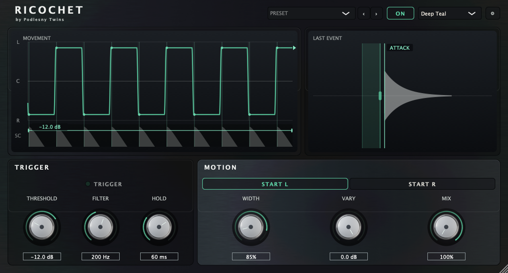

Хай-хэты и перкуссия
Хай-хэты смещаются влево-вправо по каждому удару, не скапливаясь в центре и не раздувая стереобазу искусственно.
VST3 / AU / Standalone · macOS / Windows
Ricochet запускает панорамирование от удара, а не от такта или LFO. 30 мс lookahead: перемещение заканчивается до того, как слышен атакующий фронт.

LFO-паннеры и шаблонные автопаны двигают сигнал по расписанию. Они не знают, где удар. Часть атаки оказывается слева, часть — справа, потому что панорамный переход начинается или обрывается внутри транзиента. Удар размазывается по стереополю.
Если нужно было поставить один конкретный хит в конкретное место стерео, обычные плагины не справлялись: либо удар размазывался между каналами, либо приходилось править автоматизацию вручную. Ricochet делает это детекцией транзиентов и 30 мс lookahead.
Ricochet слушает side-chain-сигнал и фиксирует каждый транзиент по порогу. Нет MIDI, нет темпосинхронизации, нет редактора паттернов.
Плагин держит постоянный буфер в 30 мс. Как только детектор видит удар, панорамное перемещение стартует заранее.
По приходу атаки сигнал уже оказывается на противоположной стороне. Весь удар — с одного панорамного положения.
Одинаковый вход + одинаковый START SIDE = одинаковый выход. Результат детерминирован.
Хай-хэты смещаются влево-вправо по каждому удару, не скапливаясь в центре и не раздувая стереобазу искусственно.
Вокальные вставки перепрыгивают между каналами в ритм исполнения, а не по заранее заданной сетке.
Стерео-движение перкуссии без фейзерных артефактов и widening-эффектов.
Pan следует за музыкантом, а не за часами секвенсора.
Интерфейс переключается между восемью темами. Работает в тёмной студии — без выжигания глаз и без ярких градиентов.
Launch price. Лицензия навсегда, один платёж.
30-day money-back guarantee.
Нет. Только аудио-триггеры. Детектор реагирует на транзиенты во входном сигнале.
Нет. Плагин не использует tempo sync и не имеет редактора паттернов.
30 мс lookahead даёт время начать движение до прихода удара. К атакующему фронту сигнал уже в новом положении.
Да. При одинаковом входе и одинаковом START SIDE выход повторяется.
Да. Демо полностью функциональна, но периодически прерывает выходной сигнал. Сохранённые проекты загружаются нормально после покупки.
VST3, AU и Standalone для macOS и Windows.